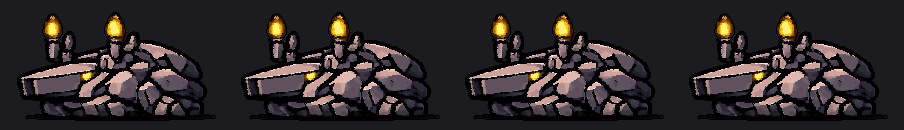
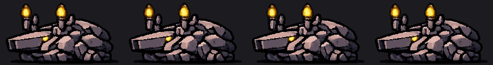

Importe
Abra uma imagem ou adote um sprite que já é pixel art.
Editor de pixel art local-first
Converta, edite, anime e exporte sprites — com processamento local, controle de paleta e ferramentas feitas para fluxos de jogos.

Pixel art, não só pixels maiores
O Dotchi parte da imagem em resolução cheia, constrói a grade e mantém o resultado editável. Paleta, camadas, frames e acabamento continuam nas suas mãos.

Fluxo direto
Abra uma imagem ou adote um sprite que já é pixel art.
Ajuste grade, cores, camadas, frames e retoques no mesmo editor.
Gere PNGs, animações, spritesheets e saídas para seu projeto de jogo.
Feito para jogos
Organize documentos por projeto, compare resultados e exporte sem perder o vínculo com a fonte.
Frames, duração, mesa de luz e GIF com tempo preservado.
Controle de cores, harmonização, limpeza e acabamento de contorno.
QuickLook, integração MCP restrita e IA textual opcional no dispositivo.
Local-first
O Dotchi não exige conta, não contém telemetria e não envia imagens ou projetos para APIs externas. Você escolhe onde cada projeto e exportação ficam.
Ler a política de privacidadeDistribuição confiável
O DMG oficial é assinado com Developer ID, notarizado pela Apple e publicado com SHA-256 para conferência.
Ver download e integridade